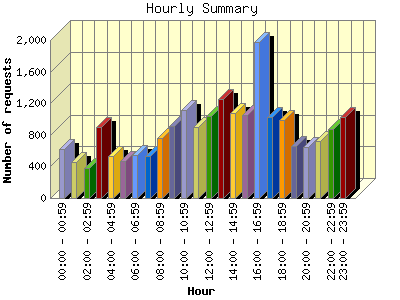
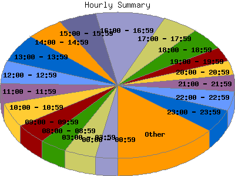

Report generated by Analog 6.0 and Report Magic 2.21
|
Web Server Statistics for "Harish Narayanan (hnarayan) - March 2007" Report generated by Analog 6.0 and Report Magic 2.21 |
The Hourly Summary identifies the level of activity broken down by each hour. Remember that one page hit can result in several server requests as the images for each page are loaded. This summary also compares the level of activity during working hours and after hours as a total for the report time frame.


| Hour | Number of requests | Number of bytes transferred | Percentage of the bytes | Percentage of the requests | |
|---|---|---|---|---|---|
| 1. | 00:00 - 00:59 | 615 | 27.244 MB | 1.77% | 3.01% |
| 2. | 01:00 - 01:59 | 460 | 23.121 MB | 1.51% | 2.25% |
| 3. | 02:00 - 02:59 | 383 | 18.661 MB | 1.22% | 1.88% |
| 4. | 03:00 - 03:59 | 893 | 110.352 MB | 7.19% | 4.37% |
| 5. | 04:00 - 04:59 | 534 | 29.883 MB | 1.95% | 2.61% |
| 6. | 05:00 - 05:59 | 468 | 83.047 MB | 5.41% | 2.29% |
| 7. | 06:00 - 06:59 | 550 | 27.184 MB | 1.77% | 2.69% |
| 8. | 07:00 - 07:59 | 531 | 93.220 MB | 6.07% | 2.60% |
| 9. | 08:00 - 08:59 | 762 | 79.558 MB | 5.18% | 3.73% |
| 10. | 09:00 - 09:59 | 907 | 65.573 MB | 4.27% | 4.44% |
| 11. | 10:00 - 10:59 | 1,111 | 70.424 MB | 4.59% | 5.44% |
| 12. | 11:00 - 11:59 | 895 | 45.536 MB | 2.97% | 4.38% |
| 13. | 12:00 - 12:59 | 1,034 | 41.265 MB | 2.69% | 5.06% |
| 14. | 13:00 - 13:59 | 1,256 | 71.163 MB | 4.64% | 6.15% |
| 15. | 14:00 - 14:59 | 1,070 | 71.945 MB | 4.69% | 5.24% |
| 16. | 15:00 - 15:59 | 1,049 | 50.465 MB | 3.29% | 5.14% |
| 17. | 16:00 - 16:59 | 1,971 | 77.737 MB | 5.06% | 9.65% |
| 18. | 17:00 - 17:59 | 1,021 | 157.458 MB | 10.26% | 5.00% |
| 19. | 18:00 - 18:59 | 988 | 63.065 MB | 4.11% | 4.84% |
| 20. | 19:00 - 19:59 | 656 | 33.670 MB | 2.19% | 3.21% |
| 21. | 20:00 - 20:59 | 647 | 35.935 MB | 2.34% | 3.17% |
| 22. | 21:00 - 21:59 | 726 | 39.577 MB | 2.58% | 3.55% |
| 23. | 22:00 - 22:59 | 869 | 115.282 MB | 7.51% | 4.25% |
| 24. | 23:00 - 23:59 | 1,029 | 103.654 MB | 6.75% | 5.04% |
| Work Hours (8:00am-4:59pm) | 10,055 | 573.669 MB | 37.37% | 49.23% | |
| After Hours (5:00pm-7:59am) | 10,370 | 961.354 MB | 62.63% | 50.77% | |
This report was generated on May 2, 2007 10:33.
Report time frame March 1, 2007 00:03 to March 31, 2007 23:52.
| Web statistics report produced by: | |
 Analog 6.0 Analog 6.0 |  Report Magic 2.21 Report Magic 2.21 |